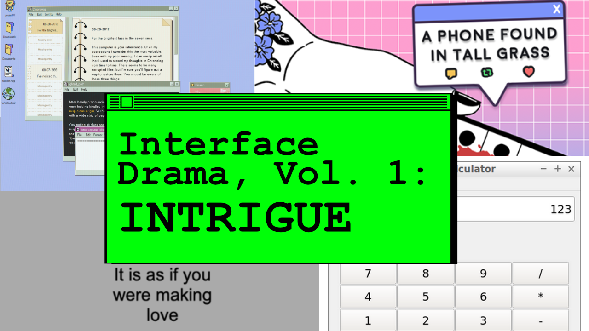

|

Hello, CJ here! I'm a co-founder of Studio Terranova. Last week, we did our first ever interface drama streaming series, and I'd like to share the games we spoke about on-stream.
For those of you who are first joining us…
What are Interface Dramas?
Interface dramas are games that use software to tell interactive stories. They could use chats, emails, blog posts, or even interfaces that don't exist yet to tell these stories. There are no AAA games to my knowledge that are interface dramas; these exist primarily within the indie space. Our game, Terranova, is an interface drama. There's more info about the genre here:
I want to use these blog posts to not only define this new genre, but also to shine a light on the many devs and studios making these interesting games. I spent the last year casually talking about interface dramas and making The Interface Drama Master List, and now I've been scheduling streaming sessions on Twitch.
Allow me to introduce you to the games we played on-stream last week.
a phone found in tall grass
Niandra's a phone found in tall grass is told through the “Twibber” profile of Lia and her friends. It covers how different people cope with disaster; some spring into action while others shitpost while the world burns. It touches on helplessness; how many of us can say we would be useful in a world-ending crisis? Fair warning; the story is dark, but beautifully told.
I found myself wanting to enlarge the photos on Twibber but was unable to. For instance, there's a joke about a butt that took some time for me to understand because I didn't realize what the photo was.
Overall, the game was a delight to play.
(play the game | follow Niandra!)
It is as if you were making love
Pippin Barr's It is as if you were making love is a funny and uncomfortable five minute experience where the player must “erotically stimulate” a computer using an interface. I turned on the “sexual themes” warning on the stream for this game even though there wasn't sex involved. Or was there sex involved?
For you see, gently manipulating a slider back and forth between -3 and 5 has made me unsure.
(play the game | follow Pippin Barr)
Desktop Explorer
I think Desktop Explorer by Recurring Dream fits perfectly the definition of “intrigue.” In it, the player receives a computer from their uncle, who asks them to unlock secrets within its files. The Windows '95-inspired interface is retro, realistic, and the gameplay is very well-designed. After playing for five minutes I was hooked.
As of now, the demo is available on itch.io; give the developers your support and wishlist them on Steam as Desktop Explorer deserves to be made! I can't wait for the full version.
(play the game | follow Recurring Dream Studio)
Pro Office Calculator
Pro Office Calculator by Rob Jinman is solidly “a mabbees game.” mabbees is my co-founder, and loves confounding puzzle games where there is no clear instruction. It is a difficult puzzle game; but it is fun as hell to play. A quick check on the itch.io page forums reveals hints from the developer, so you shouldn't get too stuck.
This game is similar to another interface drama, Last Call BBS, where the story isn't the first thing the player encounters, but is a reward for completing puzzles. Fans of Myst will likely also like this game!
(play the game | follow Recurring Dream Studio)
You can check out the full VOD here on Twitch.
Tune in this week on Friday, April 19th at 9AM JST for the next installment of interface dramas, volume 2: Longing!